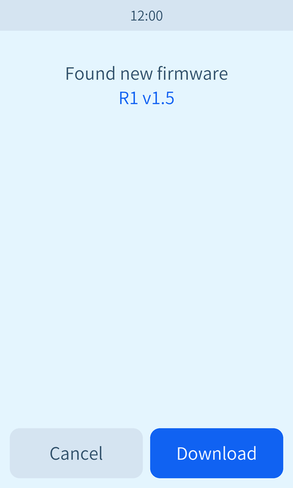
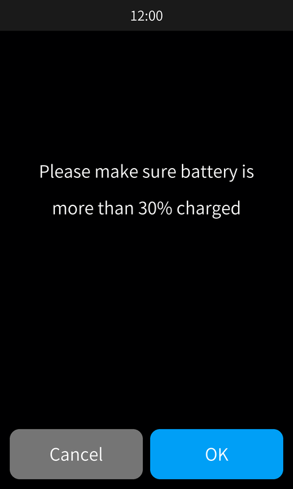

Gestures on the cover
Change songs, pause and open lyrics without any on-screen buttons. Your thumb stays on the artwork.
Swipe left: nextSwipe right: previous
An unofficial firmware mod for the HiBy R1


Swipe the album cover to change songs, tap to pause, hold for lyrics. A bigger cover and cleaner icons come with it.
This is how the album cover behaves on the player. Swipe it, tap it, or press and hold it, with a mouse or a finger. The songs below are placeholders.
Placeholder lyric line
Placeholder lyric line
The current line is white
Placeholder lyric line
Placeholder lyric line
Tap to go back to the cover
Your last gesture shows here.
On the player, the gestures work on the cover of the Now Playing screen. Tap the lyrics to return to the cover. A swipe needs about 60 pixels of travel.
Change songs, pause and open lyrics without any on-screen buttons. Your thumb stays on the artwork.
Artwork and lyrics grow from 480 x 480 to 480 x 635, about a third more picture. Song details fit in the bottom strip.
Previous, play and next are gone from the screen. The heart and the three-dot menu move to the top right.
Six plain line icons replace the stock colourful set, in both the light and the dark theme.
Cancel and OK get rounded corners and room around them on every dialog that has them, firmware update included.
The Game Boy and Game Boy Color launcher from the base firmware stays. It appears at every start.
Charge the player above 30%. Format your SD card as FAT32 or exFAT if it is new.
Put r1.upt in the top folder of the SD card, not inside another folder, and insert the card.
On the player, open System, then Firmware update, then Via SD-card, and confirm. Do not power it off.
It restarts twice and shows the Game Boy launcher. Pick HIBY PLAYER, or wait 5 seconds.
Flashing unofficial firmware can fail and may damage the device or lose data. Keep the official R1 firmware from HiBy on hand, and copy anything you care about off the player first.
A damaged download should not be flashed. On a computer, compare its SHA-256 with this one:
7c22369498540d7dd255c27368751669e81dee575f3133c966024df960b6405c
The launcher comes first at every start. Tap a row, or move with the volume keys and pick with Next Track. It starts the music player after 5 idle seconds.
Make a folder called games in the top level of the SD card and copy your own .gb or .gbc files into it. They appear in the launcher. Saves are written next to each game. Power quits back to the menu. No games are included.
| Volume up and down | D-pad up and down |
|---|---|
| Next Track | A button |
| On-screen pad | D-pad, A, B, Start, Select |
| Part | Status |
|---|---|
| Swipe to change songs | Tested on a device |
| Taller cover and new Now Playing layout | Tested on a device |
| Icons in the dark theme | Tested on a device |
| Tap to pause, hold for lyrics | Included, not yet confirmed |
| Icons in the light theme | Included, not yet confirmed |
| Rounded dialog buttons | Included, not yet confirmed |
| Game Boy launcher | Kept unchanged from the base firmware |
| Auto-pause when nothing is connected | Known issue: does not pause yet |

No. It is an independent hobby project, and HiBy does not make, support or endorse it. "Hiby Pro 2" is this project's name, not a HiBy product. Your player remains a HiBy R1.
Download the official R1 firmware from HiBy, put its file in the top folder of the SD card, and run the same update: from System, or from Firmware update (SD) in the launcher.
The launcher starts separately from the player, so try Firmware update (SD) there with official firmware on the card. The add-on also turns itself off if the player dies early twice in a row.
This build only uses the new name on this page. The About screen, Bluetooth name and boot logo still say HiBy R1, and the boot logo reads HIBY R1 PRO.
The update replaces the firmware, not the files on your SD card. Keep your own backup anyway: nothing here is guaranteed, and the launcher's art and reset tools do delete things.
Yes, with a computer and ADB. Run adb shell /usr/bin/gb-toggle.sh player to start straight in the music player, and gb-toggle.sh emu to bring the launcher back.
Auto-pause does not act yet, so it should not get in your way. To disable the whole add-on, run adb shell touch /usr/data/queue_addon_off and restart. The gestures are separate and stay on.
No. It is built for the R1 only. Do not flash it on anything else.
Version 1.0 for the HiBy R1, built on 1.8 b2. One file, 42.3 MB. By downloading you accept that you flash it at your own risk.